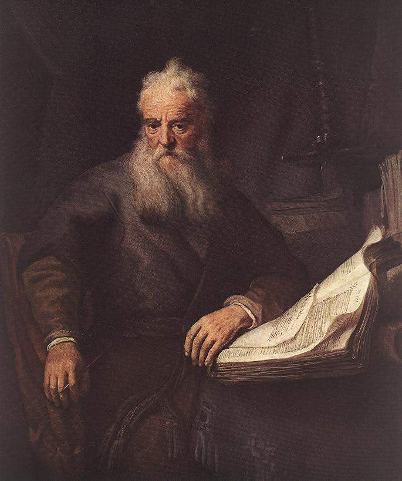

World Wide Will
About me
I am a(n)...
Christian
I am a firm believer in and follower of Jesus Christ. I do not follow one specific denomination, and for good reason. You may read my further explanation of why I believe denominations are (mostly) stupid here.
Student
I am currently studying mathematics and computer science A-levels, with less than a year remaining in my courses. Alongside these, I am undertaking an EPQ, Extended Project Qualification, which is an independent research and production course in which I am designing and developing a 2D video game using Unity.
Aspiring man
I do not call myself a man. More accurately, I only call myself a man in err, accidentally. I am an aspiring man. A man-to-be. A man-in-progress. Whatever label I give it, it means the same thing; I am not yet mature enough to consider myself a man. I have no strict list I cross items off, edging ever closer to being a man. I'll know it when I get there. For now, I pray the Lord continues to work through me to raise me up to be the man He wants me to be. Not society, not anyone else, only the Lord.
I want to be a...
Better Christian
My walk with Christ will be a life-long journey. As Paul writes in 1 Corinthians 3:1-3...
1 And I, brethren, could not speak unto you as unto spiritual, but as unto carnal, even as unto babes in Christ. 2 I have fed you with milk, and not with meat: for hitherto ye were not able to bear it, neither yet now are ye able. 3 For ye are yet carnal: for whereas there is among you envying, and strife, and divisions, are ye not carnal, and walk as men?— 1 Corinthians 3:1-3 KJV
We start as mere babes in Christ, unable to be fed meat, only milk, and much like infant children we must be raised up into strong men in Christ. Being a godly man is not being perfect. It is seeking after the Lord's heart. It is giving yourself to that which is above you, Christ, and sacrificing yourself to that which is below you. It is serving the church, your family, and community. It is counting yourself dead to sin and alive to God.
All of these things, and more, are easy to put into ink on a page, or pixels on a screen. It is remembering to do them every day, in every action which is most difficult. Harder still is remembering that you will fail, for no man can live up to the glory of God, and turning to your heavenly Father to be forgiven, rejuvinated, and strengthened.
Father
I want to raise children and love my wife like Christ loves his church. Not only because I am commanded to do this, but because it is the single most fulfulling duty a man can take on in his life. One of my bigger fears in life is that I will miss out on this opportunity. With the family under greater attack than we have seen in any modern history, it is no wonder I fear this; it's very rational to consider the fact that it is hard to raise a God-fearing, traditional family in a society that villainises that very idea, that is so hostile to it, that despises its very existence. And I'm not even talking about the price of raising children, of the ever-shrinking middle class. I'm talking about a spiritual hostility. One that is not overcome with riches or land or other such worldly forms of wealth.
I must also accept that God's plans for me may not include having children. His plans are Glorious, and I do not doubt Him in the slightest. I am most excited to discover these plans and see where the Lord takes me.
Leader
If there is one thing I cannot quite explain, it is my sense of duty to lead. Why do I have it? It is not for my own glory; any success I have in leading will be for the glory of God, as all strength I received would come through Him, all guidance through Jesus Christ. It is not because I just love that responsibility, it's terrifying. Ask any mother or father and they will confirm. Ask any man who lived in the last few thousand years, while men still took up leadership roles, and they will surely agree. In the few leadership roles I have been blessed enough to be put in, I have been terrified. I don't know what to do in every situation. But do you know who does? Jesus Christ.
Perhaps that is where the answer to my question lies. If all success I have is through Jesus Christ, and all glory is passed up to Him, and I owe everything to Him, why would I not want to lead, or indeed, do absolutely anything I can to praise Him?
Why leadership in particular? Perhaps that is a question best left for God to answer. After all, why anything in particular? Why did He design me to be like this? Why did He design you to be like that? Why did He design χ to be like γ?
